| 日付 | 2016年5月5日（木） - 2016年5月7日（土） | ||
|---|---|---|---|
| 山域 | 伊豆諸島 | ||
| メンバー | 家族（妻、長女・5歳、長男・2歳） | ||
| 山行形態 | 子連れ2泊3日ホテル泊 | ||
| アクセス | 電車、船、車、バス | ||
| ルート (Map) |
|
2日目
本日は三原山に登る予定。大島温泉ホテルの駐車場に車を停めさせてもらう。
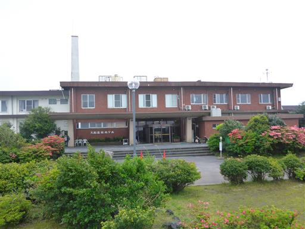
準備中、息子は砂遊びに興じている。
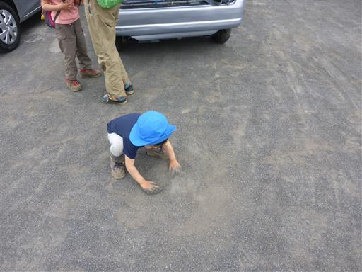
今日は残念ながらあまり天気が良くなく、三原山は半分雲に覆われている。
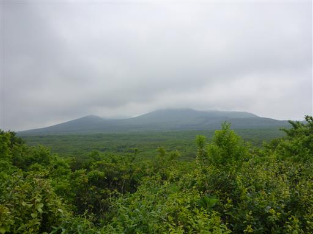
もうすぐツツジの季節。ちらほらツツジの花が咲いている。
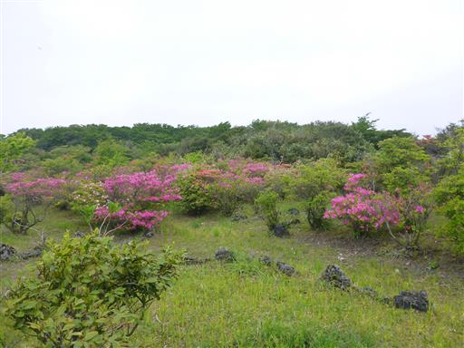
バスが来るまで時間があるので、ホテルで名前入りの
椿のキーホルダーを購入する。その場で名前を掘ってくれる。
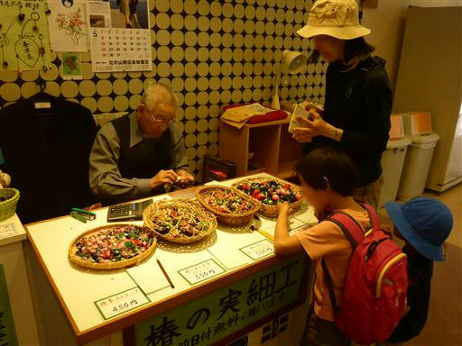
少し遅れてバスがやってくる。
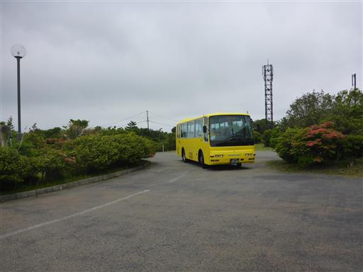
三原山山頂口に到着。標高550m。
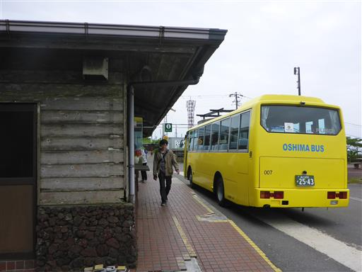
昔の観光地という雰囲気で、少し寂れている。閉まっている土産物屋が多い。
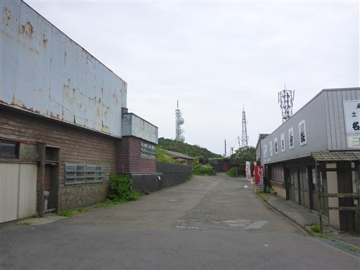
展望所の脇から登山道に入って行く。
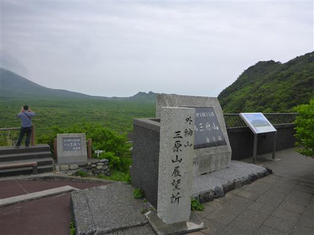
登山口は三原山の外輪山にあたる部分で、ここから山頂を目指す。
目の前には三原山中心部の全体像が見渡せる。
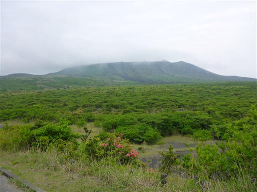
登山道と言っても、山頂部までは舗装道が続いているので楽ちんだ。
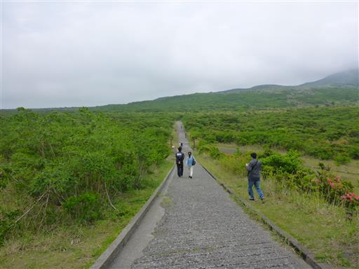
1986年の噴火時に流れ出た溶岩が積み重なっている。
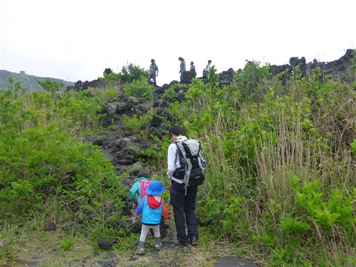
真黒な溶岩の上に登ってみる。
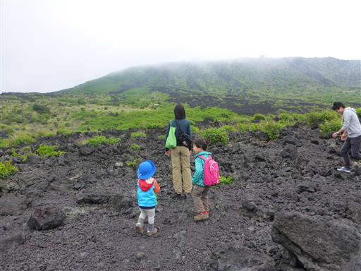
付近はヤシャブシの木が多い。独特の黒い実がたくさんついている。
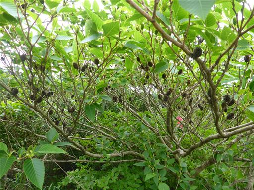
所々に噴火時の避難用シェルターがある。
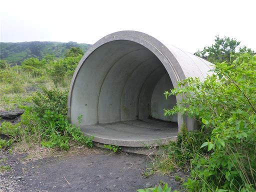
足元にリンドウの花が咲いている。
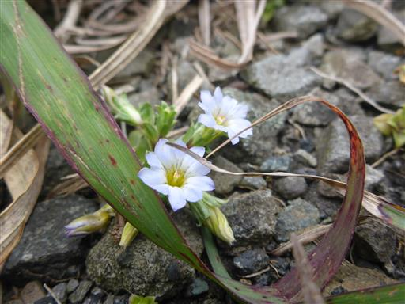
勾配が急になるとジグザグの舗装路になる。なかなか高度があがらない。
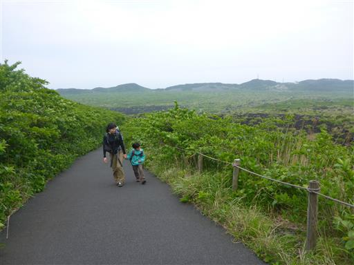
眼下には外輪山内の広大なカルデラが見渡せる。
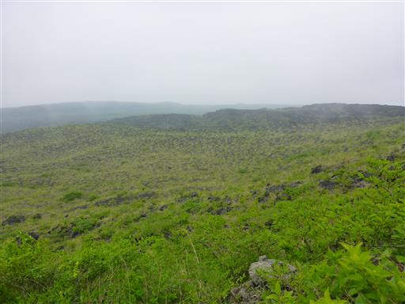
内輪山に到着。
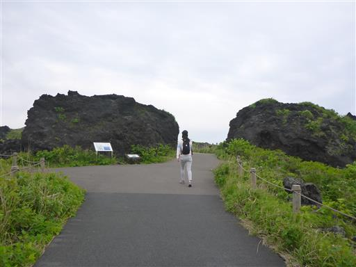
ゴジラ岩。1986年の噴火時に形成されたゴジラの形をした岩だ。
ちなみに1984年の映画でゴジラは最後に三原山の噴火口に落ちている。
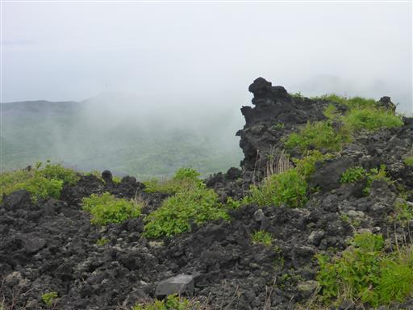
噴火口展望所に向かう。ここまで舗装路は続いている。
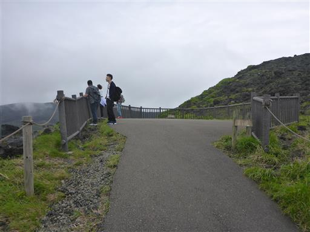
火口壁は見えるのだが、残念ながら噴火口の底は見えない。
何とも煮え切らない展望所だ。
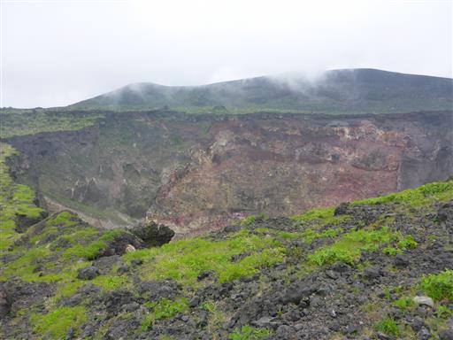
山頂部の風景。内輪山の山々が見渡せる。
風があるので展望所の側の風が避けられる場所で昼食をとる。
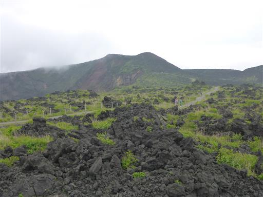
昼食をとり終わったら、内輪山をぐるっと一周歩く。
しかし、一帯が雲に覆われて真白になってしまい、風も急に強くなってしまった。
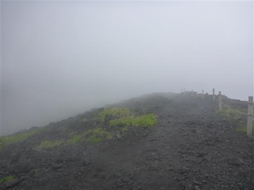
娘は風が嫌で泣きべそをかいているので、しばらく抱っこして進む。
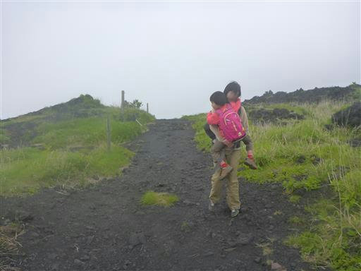
内輪山からは噴火口の底がわずかに見えた。
噴火口を眺めるのであれば、展望所よりここからの方が良さそうだ。
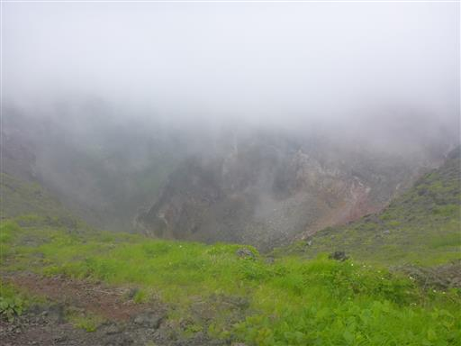
娘は風を克服したのか、途中から歩き始める。
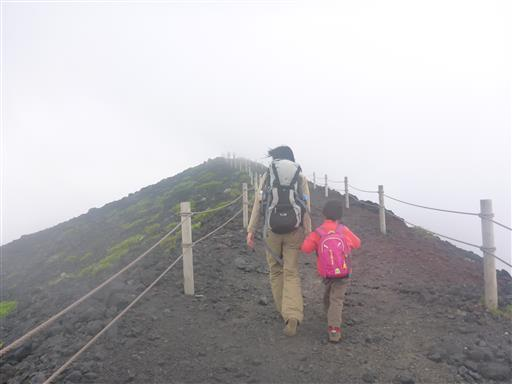
特に標識は見当たらないが、この辺りが剣ヶ峰だろうか。標高749m。
三原山の最高地点は三原新山（758m）だが、そこへの登山道は無さそうだ。
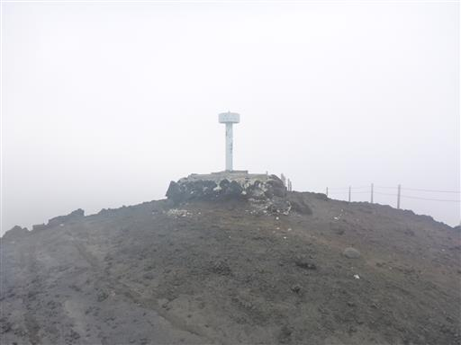
火口壁からは今でも噴煙が上がっている。
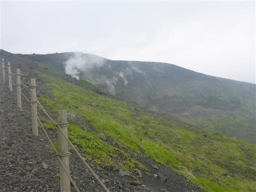
分岐点に到着。ここから大島温泉ホテルまで続く下山道に入って行く。
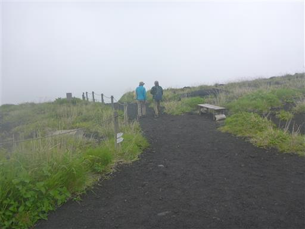
登山道には小さな石が散らばっている。軽い石が多い。
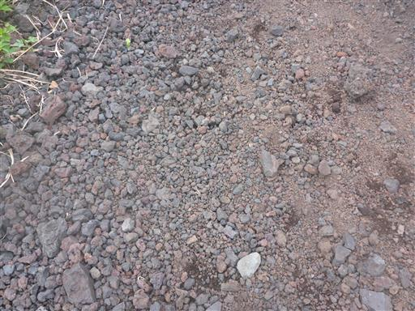
緩い斜面を下っていく。
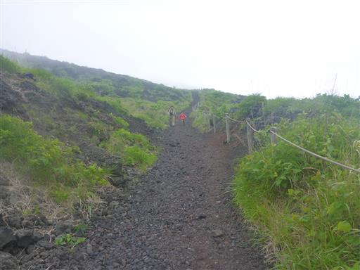
周囲には荒涼とした大地が広がっている。この辺りは裏砂漠と呼ばれている。
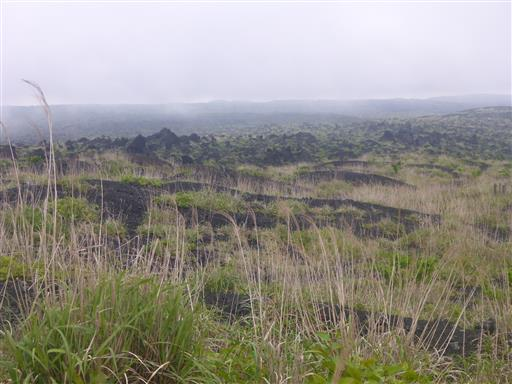
広大な大地の中を歩いて行く。あまり生命の気配がしない場所だ。
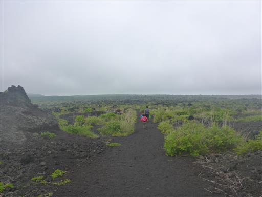
途中でベンチとテーブルがあったので、おやつ休憩をとる。
背景は三原山だ。
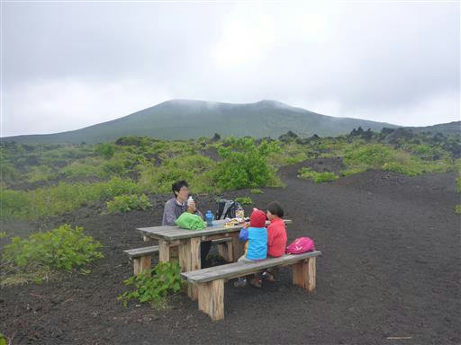
周囲はごつごつとした溶岩だらけ。
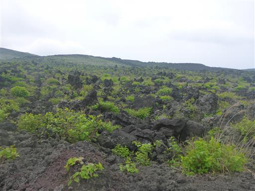
おやつを食べたら歩を進める。遠くに目的地の大島温泉ホテルが見えている。
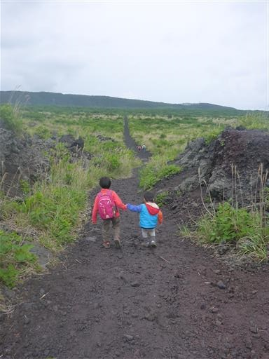
三原山山頂から離れていくに従い、周囲の木が大きくなってくる。
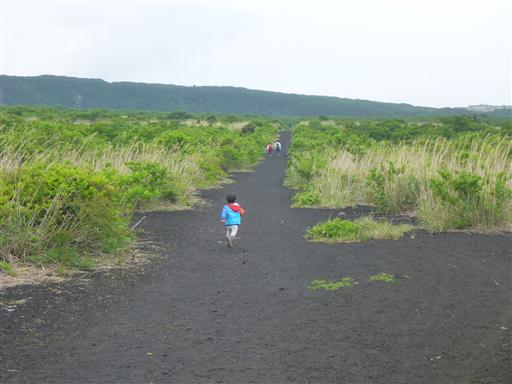
地面を見ると、石の隙間からたくさんの芽が顔を出している。
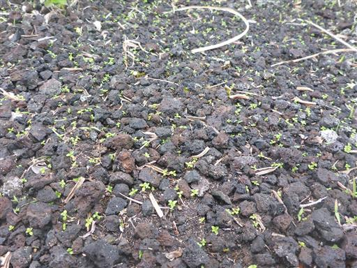
さらに進むと木に覆われて視界が広がらなくなる。
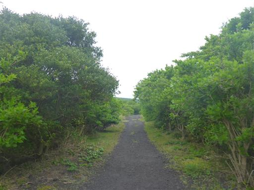
次第に辺りは鬱蒼とした森になる。この植生の変化は面白い。
天気が回復していくのかと思ったら、逆に雨が降ってくる。
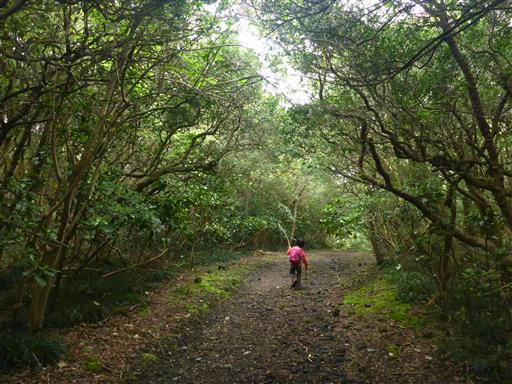
ホテルのすぐ側にあるつつじ園に到着。
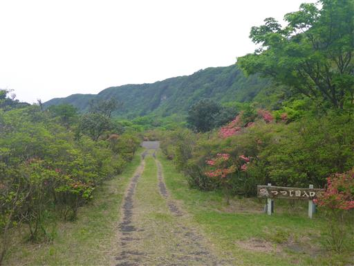
僅かの登りで駐車場に到着する。標高490m。
三原山はもう影も形も見えない。
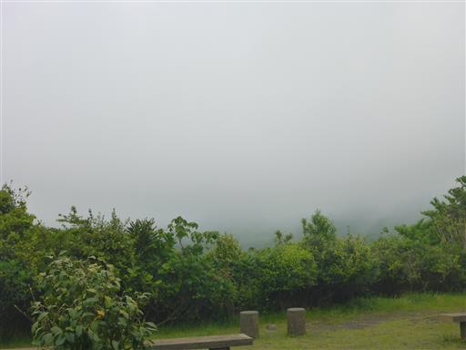
子供を昼寝させるため、車に乗って遠くへ遠くへ移動。
辿り着いたのは伊豆大島の北端、乳ヶ崎。結局、子供たちは車で寝なかった…
100m近い丘が一気に海に落ち込む独特の景観が広がっている。
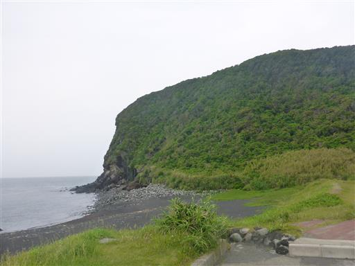
ここも一面、溶岩に覆われている。
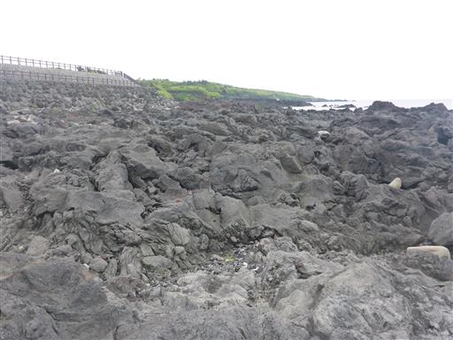
ハマヒルガオと思われる花がたくさん咲いている。
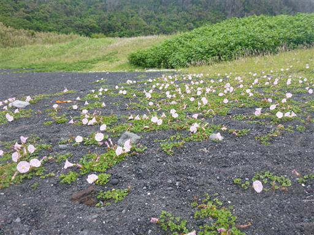
温泉に寄って宿に戻ることにする。
元町浜の湯は水着着用の混浴露天風呂で、プールのような感覚で入れる。
子供達は大喜びで、周りのおじいさんに可愛がってもらっていた。
帰りに明日葉と甘夏までいただいた。
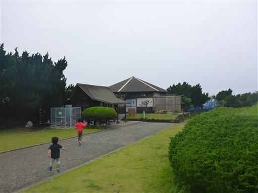